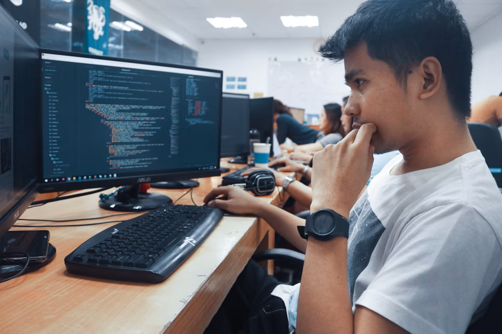

Aplicações na Educação
O pensamento computacional pode acompanhar o estudante em diferentes etapas da formação.
Em cada nível de ensino
Ensino Fundamental
- Jogos de lógica;
- Atividades em grupo;
- Organização de sequências;
- Identificação de padrões.
Ensino Médio
- Projetos interdisciplinares;
- Introdução à programação;
- Análise de informações;
- Resolução de desafios.
Ensino Superior
- Pesquisas acadêmicas;
- Análise de dados;
- Projetos de extensão;
- Soluções para problemas reais.

Benefícios para o estudante
Resolução de problemas
Os desafios são analisados com calma e divididos em etapas possíveis de realizar.
Colaboração
As atividades coletivas estimulam a troca de ideias e a divisão de responsabilidades.
Criatividade
Um mesmo problema pode receber soluções diferentes, que devem ser testadas e comparadas.
Pensamento crítico
O estudante aprende a observar informações, avaliar resultados e corrigir suas estratégias.
Na sala de aula
Atividades sem computador
Cartões, jogos, mapas e desafios de sequência permitem praticar os conceitos com materiais simples.
Atividades com computador
Programação visual, pesquisas e produção de projetos digitais aproximam teoria e prática.